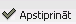

Tabeles aizpildīšana¶
Darba laika uzskaites tabele parāda darba laika uzskaiti katram strādājošajam. Dati tiek sagatavoti par vienu periodu (mēnesi), atsevišķi pa struktūrvienībām, norādot atbilstoši katram strādājošajam nostrādāto dienu un nakts stundu skaitu dienā. Sākotnēji, aizpildot datus, Tabeles Virsraksta daļā, nepieciešams norādīt atbilstošo periodu un Struktūrvienību, par kuru dati tiks aizpildīti:

Lai aizpildītu Tabeli, iespējams izvēlēties kādu no lietotājam ērtākajiem datu ievades veidiem:
1. Tabeles aizpildīšana no noklusētajām vērtībām no
Kalendāra
`````````````````
No noklusētajām vērtībā Tabeli iespējams aizpildīt tiem darbiniekiem,
kuri strādā pēc Normālā kalendāra pilnu darba nedēļu no pirmdienas
līdz piektdienai.
Lai ielādētu datus no noklusētajām vērtībām, Virsraksta daļā jānospiež
poga:
, tiks piedāvāts paziņojums, vai ielādēt datus - ja datus nepieciešams ielādēt, jāatbild apstiprinoši:

Pēc datu ielādes Tabelē, darbiniekiem, kuriem slodzes aprakstā noteikts Normālais kalendārs, tiks ielādēti dati atbilstoši noteiktajam Kalendāram:

2. Tabeles aizpildīšana no definētajām vērtībām Darba laika
uzskaites grafikā
```````````````````
Izmantojot definētos darba laika uzskaites grafikus, ērti un
automatizēti iespējams aizpildīt tabeles darbiniekiem, kuri strādā pēc
summētā kalendāra maiņu grafikos.
Lai aizpildu datus no darba laika uzskaites grafika, tabelē
nepieciešams ar peles kursoru pie konkrētā strādājošā atzīmēt dienu,
no kuras sākot cikls būtu aizpildāms (iespējams uzreiz aizpildīt datus
vairākiem darbiniekiem, kuriem darba laika uzskaitē tiek izmantots
tāds pats grafiks un kuriem cikls sākas vienā dienā!):

Izvēloties nepieciešamo darba laika grafika veidu, strādājošajam tiks aizpildīta tabele visām mēneša dienām, sākot no dienas, kurā tiks norādīts cikla sākums!:

3. Tabeles aizpildīšana, ievadot nostrādāto stundu skaitu katram
darbiniekam manuāli
```````````````
Lai aizpildītu tabeli manuāli katram darbiniekam atsevišķi,
nepieciešams izvēlēties atbilstošo darbinieku un ar peles kursoru
atzīmēt dienu, lai ievadīt atbilstošo nostrādāto dienas vai nakts
stundas skaitu:

Tabeles saglabāšana un apstiprināšana¶
Tad, kad visiem struktūrvienībā esošajiem strādājošajiem darba laika grafiks tabelē ir aizpildīt, sagatavotos datus iespējams “Iesniegt”->Rīku joslā nospiežot pogu:.. image:: images_ozols/26451.png
- scale
100%
. Pēc tabeles iesniegšanas, to iespējams apstiprināt, lai savadītās stundas varētu tikt izmantotas algu aprēķinu veikšanai, nospiežot pogu:
.

{kind=link}
{kind=link}
{kind=link}